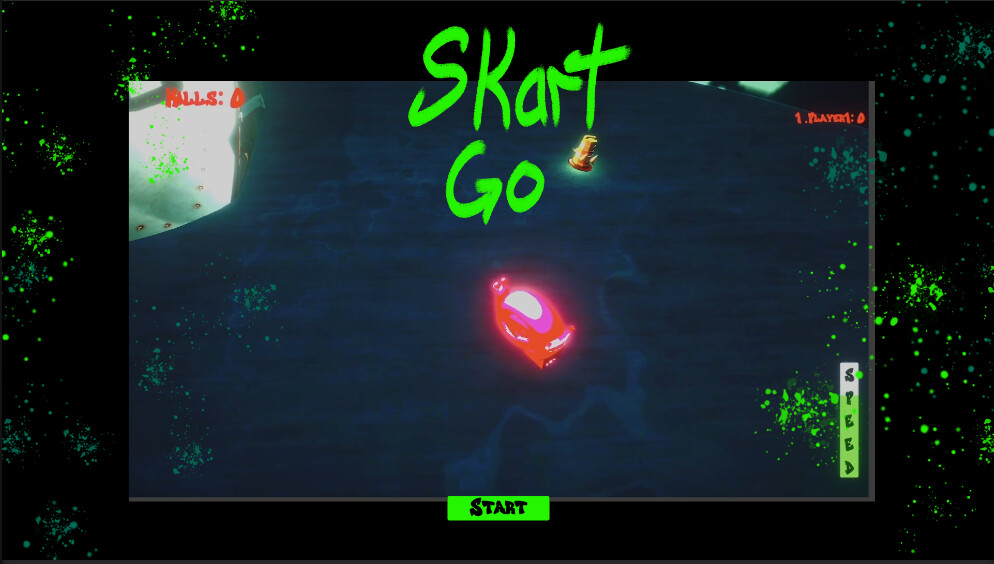

S Kart GO

Overview
S Kart GO is a kart racing game developed collaboratively as part of the Game Design program at Michigan State University. Built in Unity by a cross-disciplinary team, the game brings together racing mechanics, character variety, and fast-paced competitive play.
Update this section with more detail about the game's setting, modes, or unique mechanics.
My Role
I was responsible for the full UI/UX design and implementation on the project. Kart racers present unique interface challenges — the HUD needs to communicate speed, position, lap count, and item status at a glance without pulling the player's attention from the track.
- Designed the race HUD, results screen, character select, and main menu in Figma
- Built and integrated all UI elements in Unity using C# and the UI Toolkit
- Iterated on HUD layout through multiple playtesting sessions to reduce visual clutter
- Established typography and icon systems consistent across all screens
- Collaborated with artists and programmers to align UI with the game's visual style
Design Challenges
The core HUD challenge was information density — a kart racer needs to surface race position, current lap, speed, and active power-up simultaneously, all while the player is focused on the road. I went through three major HUD layout iterations, progressively reducing clutter by moving from text-heavy readouts to icon-based indicators and placing critical info at the corners of the screen within natural peripheral vision.
Add any other specific design decisions or challenges here.
Tools & Tech
- Unity / C#
- Figma (wireframing & UI design)
- Unity UI Toolkit
- Git / version control
- Cross-discipline team collaboration